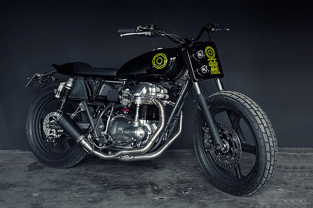
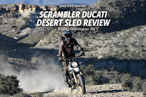

Is this the year of the BMW K100? We reckon so. The earlier R-series boxers have held the limelight for long enough—and
let's face it, any R donor you find now either comes at a premium, or has already been hacked. So if you're looking for
a classic Beemer, choose a K. You'll get a...

Monomonkee: Getting Dirty with the Wrenchmonkees
q> days ago / 20 comments / Custom Motorcycles
The dirt track revolution continues apace. Even the big guns are turning their eyes towards the ovals, and the latest to
catch the bug are Nicholas Bech and Per Nielsen of the Wrenchmonkees. We're guessing the scene is pretty small in
Denmark, but it's only a three-hour drive from Copenhagen to the German border. “Nicholas...
Custom Bikes of the Week: 22 January, 2017
A classy Moto Guzzi Centauro from the USA, a racy BMW K100 from Japan, and a brawny Honda CB750 from Vietnam. Let's end
the weekend...
Gird Yourself: El Solitario's Street Legal Dirt Tracker
Batten down the hatches and don your flak jacket: The purveyors of the world's most hated motorcycles are back. This
time, the infamous El Solitario...

Review: Scramber Ducati Desert Sled
You don't need to be a regular reader to know that scramblers are hot. Over the last few years, the term has become the
go-to...